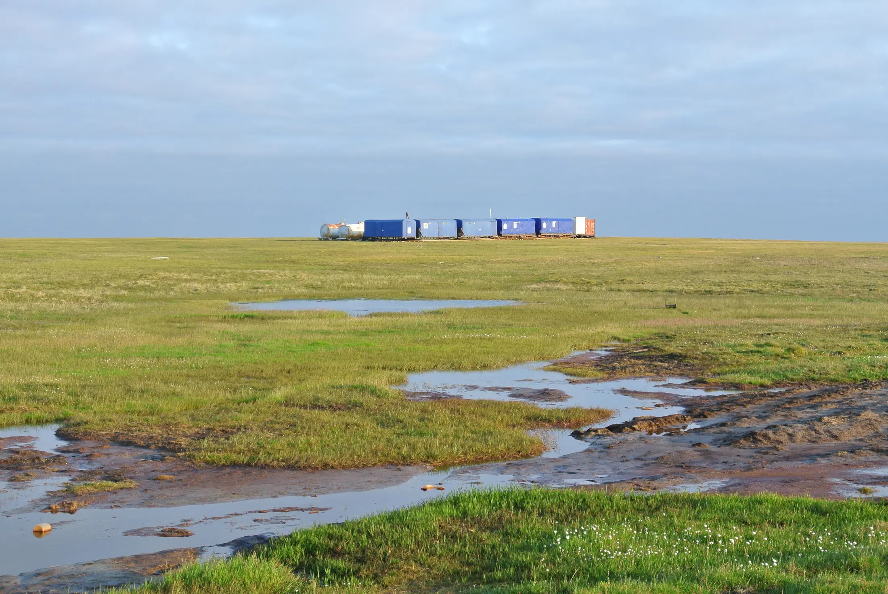
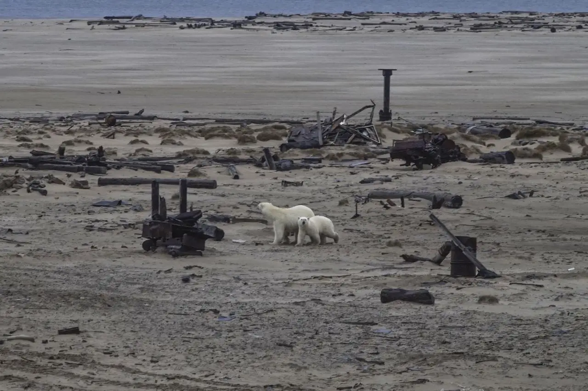

Ассоциация «Некоммерческое партнёрство» · Салехард · с 2014 года
Российский центр
освоения Арктики
Организуем комплексные научно-исследовательские экспедиции, поддерживаем сеть научных стационаров на Ямале и Гыдане и связываем органы власти с научным сообществом.
о. Белый · 73°19′25″ с. ш. 70°03′22″ в. д.
- 6научных стационаров на Ямале и Гыдане
- до 10человек круглый год на острове Белый
- 2015Белый в каталоге станций INTERACT
Наука в поле, а не на бумаге
Центр создан во исполнение решения Президента России от 7 мая 2013 года № Пр‑1023 и постановления Правительства ЯНАО от 14 марта 2014 года № 187‑П. Вот чем он занят.
- экспедиции
Комплексные арктические экспедиции
Программа «Ямал‑Арктика»: криогенные процессы, воронки газового выброса, редкие птицы, белый медведь и дикий северный олень.
- стационары
Сеть научных стационаров
Жильё, склад, печь, солнечные станции и связь там, где нет посёлков: от острова Белый до озера Парисенто.
- экология
Очистка арктических территорий
Реабилитация земель, нарушенных прошлой хозяйственной деятельностью: экспедиции волонтёров на остров Вилькицкого.
- координация
Наука и власть за одним столом
Интеграция работы региональных и федеральных научных институтов, конференции о климате и мерзлоте, поддержка проектов нацпроекта «Наука».
Карта экспедиций Ямала
Стационары и места работ, названные на сайте центра. Выберите точку — фото, годы и тема исследований.
Схема не в масштабе. Координаты — со страниц стационаров.
стационарэкспедицииэкологическая уборкаофис центра
Стационары: что есть на месте
Учёные приезжают не в пустую тундру. Вот база, на которую можно рассчитывать при планировании полевого сезона.

Остров Вилькицкого: убрать за прошлым веком
Экологическая экспедиция 2019 года. Волонтёры из России, Молдовы, Казахстана и Израиля почти месяц собирали металл и разбирали постройки советских времён.
- 60 гаубранной территории
- 200+ тметаллического мусора
- 500+двухсотлитровых бочек
- 20ветхих зданий разобрано
Итоги 2019 года по данным центра. В 2017 и 2018 убирали по 30 т металла.
О центре
Ассоциация «Некоммерческое партнёрство Российский Центр освоения Арктики» (НП «Центр освоения Арктики») — некоммерческая социально ориентированная организация. Создана 10 июня 2014 года в Салехарде.
Цель — социально-экономическое развитие Арктической зоны России через экологическую реабилитацию территорий, научные исследования и взаимодействие органов власти с научным сообществом.
Среди членов партнёрства — Тюменский научный центр СО РАН, Арктический и антарктический научно-исследовательский институт, Институт проблем нефти и газа РАН, РГУ нефти и газа имени И. М. Губкина.
Руководство
- Президент партнёрства
- Пушкарев Владимир Александрович
- Директор партнёрства
- Умников Андрей Николаевич
- Заместитель директора
- Карташева Валерия Сергеевна
Структура
- Отдел координации научной деятельности
- Отдел экспедиционного и материально-технического обеспечения
- Отдел подготовки мероприятий и административного обеспечения
- Финансово-экономический отдел
- Центр развития оленеводства
Публикации
Новости центра
- Столица Ямала станет площадкой для обсуждения изменений климата и деградации мерзлоты
- На Ямале завершены исследования бугров пучения
- Учёные завершили первый этап экспедиции на Полярный Урал по изучению мерзлоты
- Модернизация научно-исследовательского стационара «Сабетта»
- Для восстановления «мерзлотника» в «Обдорском остроге» проведут проектно-изыскательные работы
- Центр расширяет сеть научной инфраструктуры на Ямале: Марре-Сале и Пельвож
Научные отчёты «Ямал‑Арктика»
- Современные практики природопользования оленеводов Приуральского района ЯНАО
- Изучение снежного покрова, озёр и воронок газового выброса на Центральном Ямале
- Дистанционное зондирование сезонно-талого слоя, растительности и термокарстовых озёр района Бованенково
- Изучение редких видов хищных птиц на юге Ямала
- Исследование территорий техногенного (нефтяного) загрязнения земель и водных объектов ЯНАО
Закупки и документы
- 2026
Положение о закупках
Положение о закупках РЦОА в редакции 2026 года.
- протоколы
Документы и формы
Закупочная документация, проекты договоров, протоколы и обоснование цены.
- реквизиты
ИНН 8901998491
ОГРН 1148900000314, КПП 890101001. Полные платёжные реквизиты — на странице.
- политика
Персональные данные
Положение об обработке и защите персональных данных работников и иных лиц.
Написать в центр
629007, Салехард, ул. Республики, д. 20, офис 304
info@rcoa.ru